Under corona fik jeg, som mange andre, lige pludselig meget ekstra tid. Jeg begyndte, at tegne og male motiver af Bornholm, og besluttede efterfølgende, at sende dem på til tryk og sælge postkort med disse motiver. ‘Hyldest’, som jeg kaldte min lille virksomhed, fik fem forhandlere rundt på øen og varede i to sæsoner.
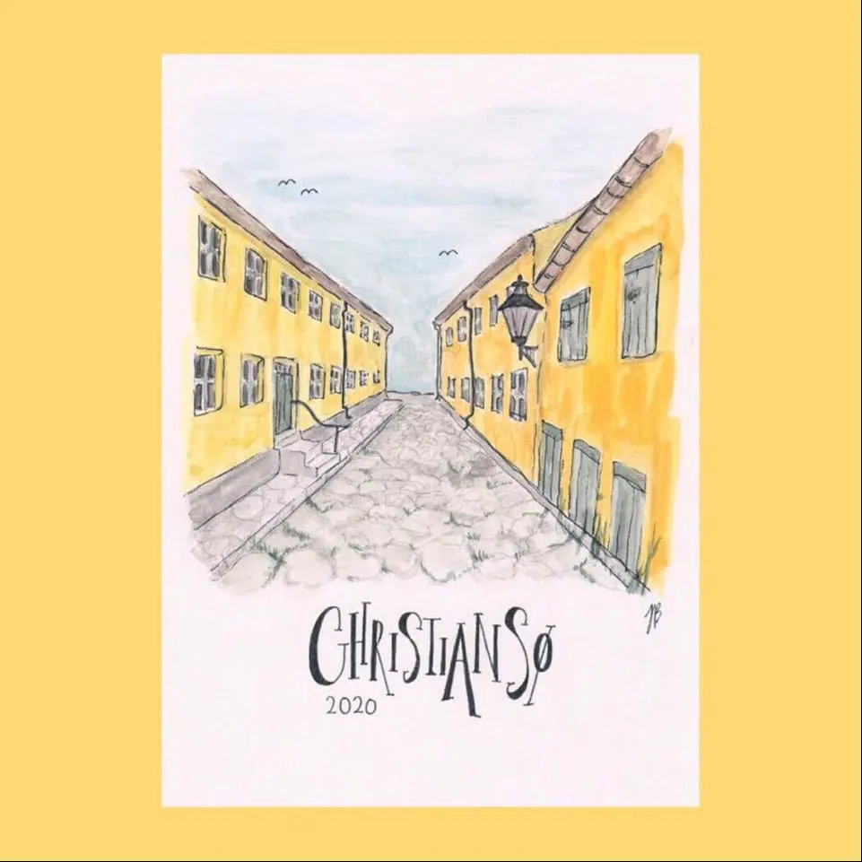 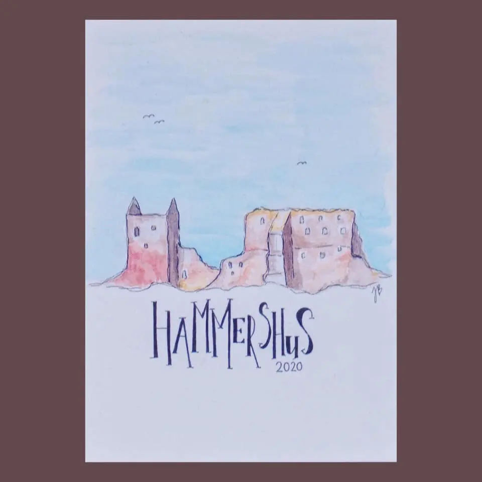 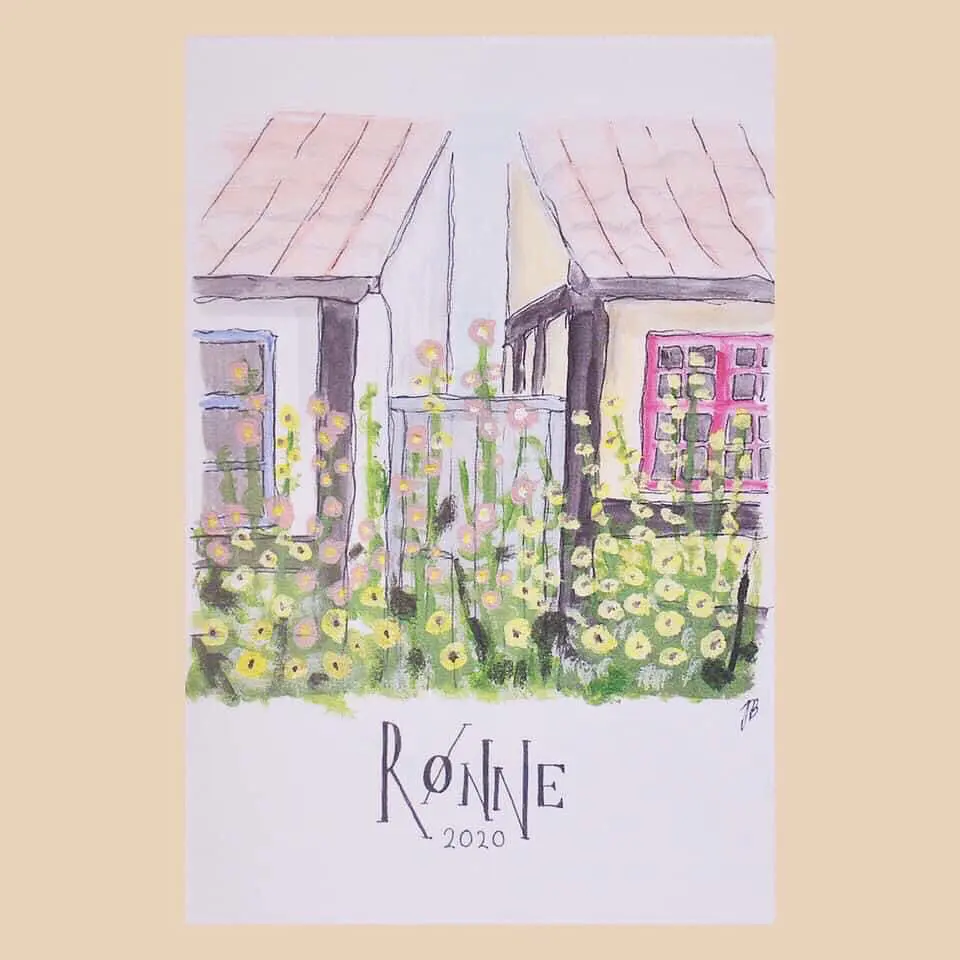 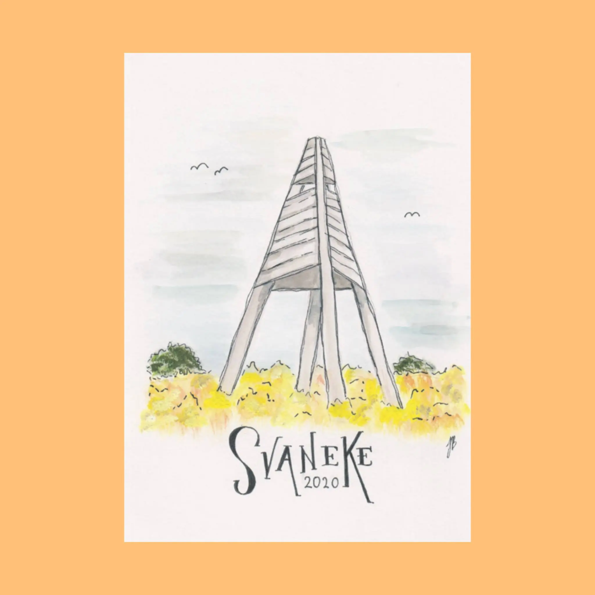 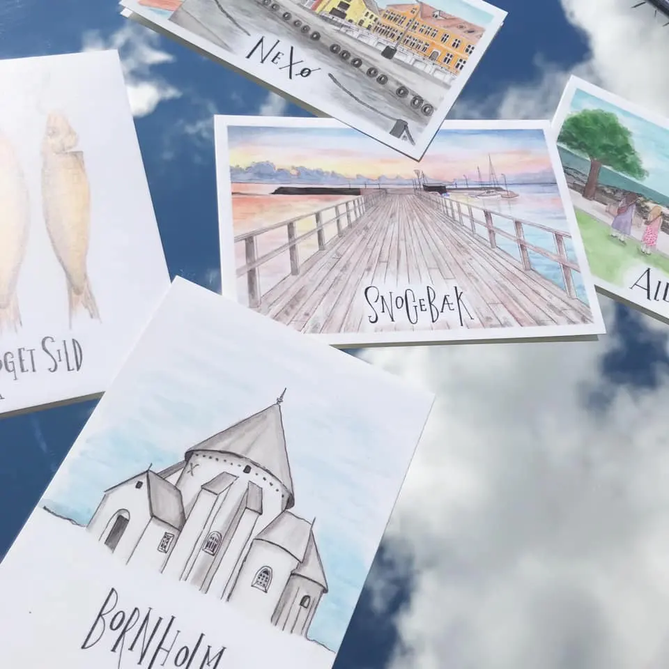 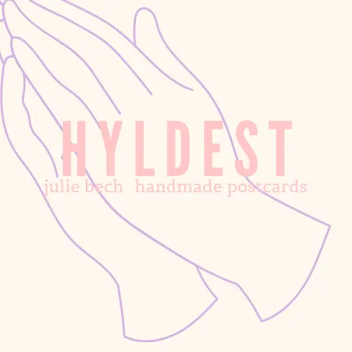Om mig
Mit navn er Julie Weinrich Bech. Jeg er 23 år gammel, og er født og opvokset på solskinsøen i Østersøen - Bornholm. Lige siden jeg var barn har jeg haft en dyb passion for det visuelle. Jeg husker, da der blev afholdt en konkurrence på min folkeskole, da jeg gik i fjerde klasse. Konkurrencen gik ud på at skabe et logo, som skolen kunne bruge til merchandise i form af fx. hættetrøjer. Jeg sad i timevis og tegnede derhjemme, og dedikerede al min koncentration til projektet. Da jeg gik hen og vandt konkurrencen et par uger senere, fik jeg en følelse af, at jeg var i mit helt rette element. Jeg brænder for at skabe visuelt tiltalende og inspirerende værker, hvad enten det er gennem digital kunst, redigering, animation eller bare på et stykke blankt papir. Med en sans for detaljer og en kreativ tilgang arbejder jeg dedikeret på at bringe mine ideer til live og levere projekter, der både er æstetisk tiltalende og meningsfulde.
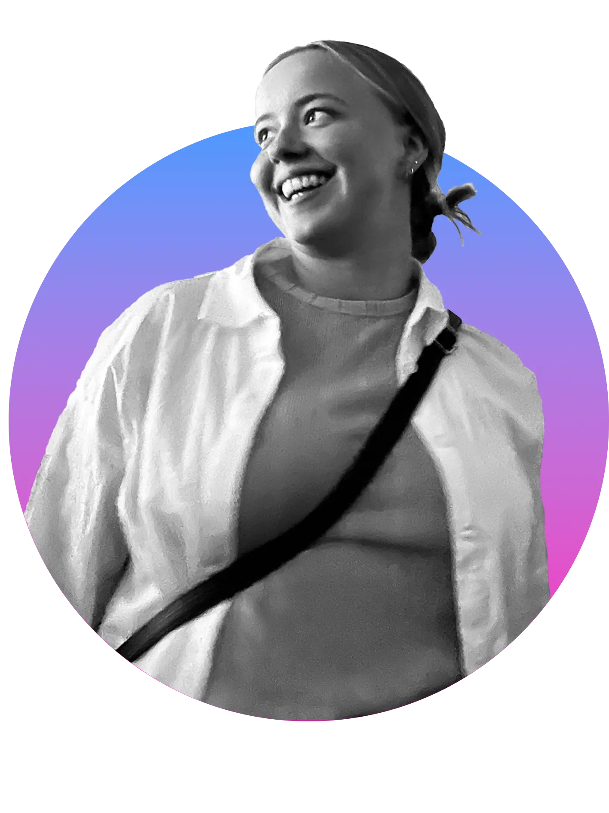CV
Skabte mini-virksomhed ‘Hyldest’
maj 2020 - september 2021
Volontør hos SAT-7 PARS
oktober 2022 - december 2023
I mit sabbatår ønskede jeg at blive udfordret og at lave noget meningsfuldt arbejde. Igennem organisationen Mission Afrika, blev jeg udsendt til Limassol Cypern. Her var jeg volontør hos den kristne TV-station SAT-7 PARS, som producerer og broadcaster kristne indhold til satellit-tv og sociale medier til Iran, Afghanistan og Tajikistan, hvor det er forbudt og farligt at være kristen. Som volontør var min primære opgave at redigere animationsindslag til børneprogrammer, men også at bygge rekvisitter til sets og TV-programmer.
Book of the week
Jeg skulle sørge for at have en animationsvideo klar til hver uge, til et børneliveshow kaldet 'Goldpand'. Indslaget kaldte vi for 'Book of the week' og omhandler persiske eventyr og historier, som jeg stod for at illustrere.
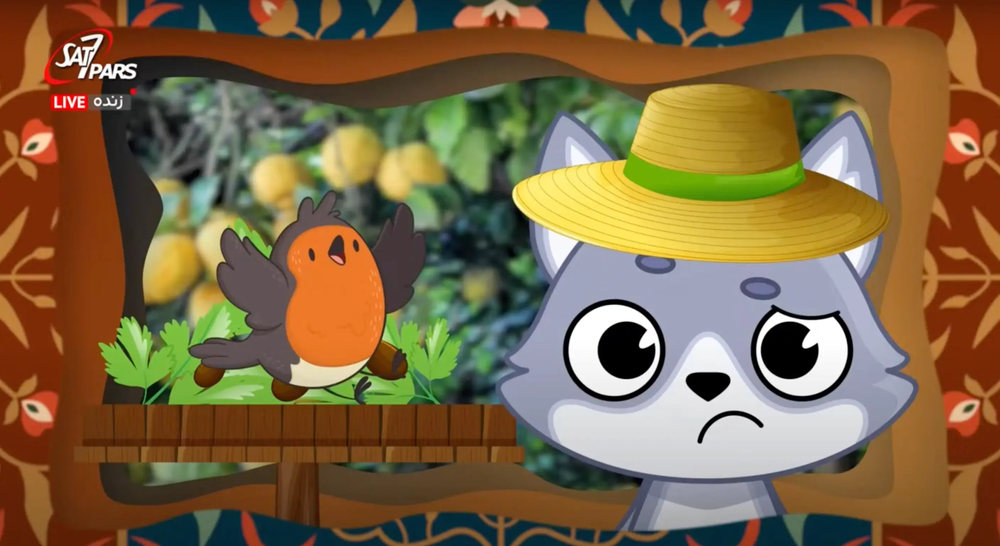 Episode 20 af Book of the week (40:51 - 47:43)Ask God Anything
Jeg stod i en periode også for at redigere et andet indslag kaldet 'Ask God Anything', som skulle bruges til et liveshow kaldet 'Hashtaget'.
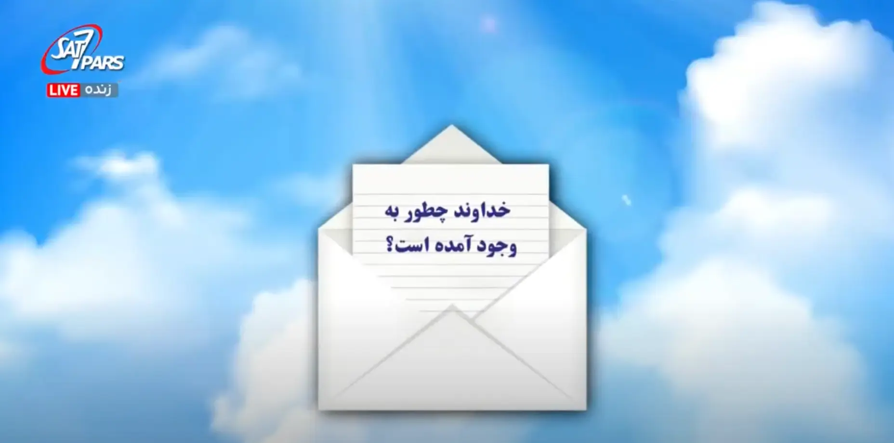 Episode 6 af Ask God Anything (54:55 - 56:34)Penumbra
Jeg var med til at skabe en ny ungdomsserie kaldet 'Penumbra', hvor jeg blandt andet lavede titelsekvensen.
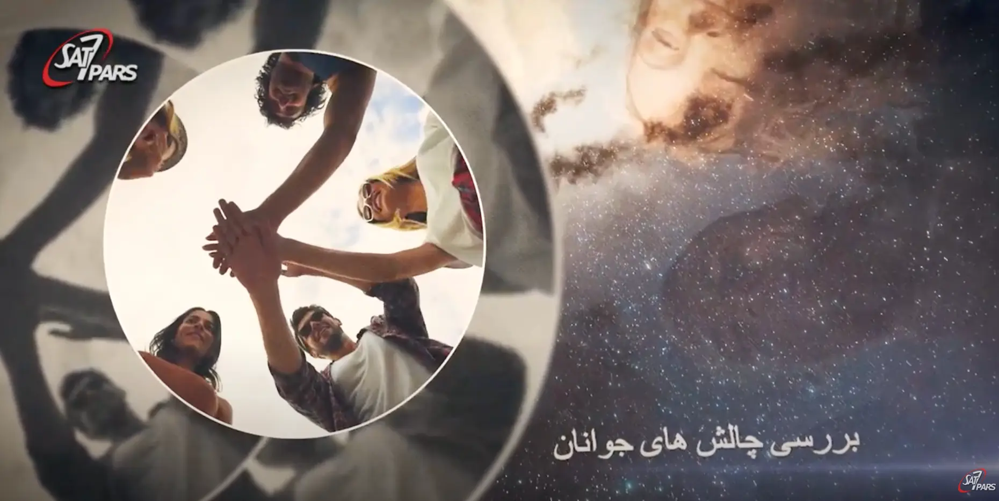 Titelsekvens fra Penumbra (0:00 - 00:52)Sweet Anecdotes
En opgave jeg også fik jævnligt som volontør, var at bygge rekvisitter til et program kaldet 'Sweet Anecdotes'. Jeg byggede i januar 2023 en miniature tempelmur, hvor jeg dokumenterede hele arbejdsprocessen.
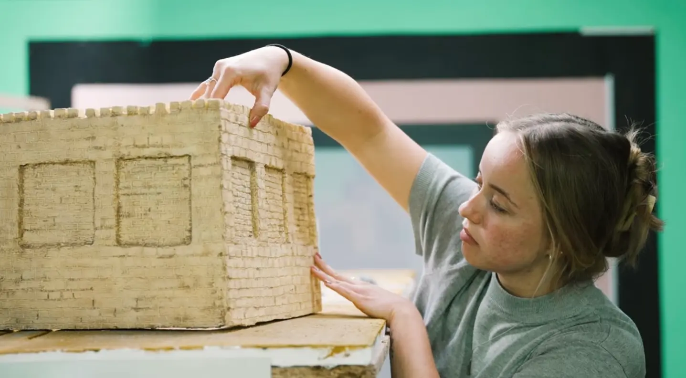 Dokumentation af at bygge en rekvisitFreelancing editor hos SAT-7 PARS
januar 2024 -
Jeg arbejder nu som freelancer fra Danmark af, hvor jeg har enkelte redigeringsopgaver.
Studerende på multimediedesign-linjen på Københavns Erhvervsakademi
januar 2024 -